Матеріали Дентсплай · журнал «ДентАрт» 2015 №2
Ультразвуковий скейлінг у стоматології
ULTRASONIC SCALING IN DENTISTRY
Підтримання здоров'я і превенція, або запобігання, захворювань — фундаментальні завдання сучасної медицини. Першопричина захворювань тканин пародонта — це бактеріальний наліт або мікробна біоплівка. Біоплівка є спеціалізованою бактеріальною екосистемою, яка містить різні види мікроорганізмів, об'єднані позаклітинним матриксом. Фізичні, метаболічні та молекулярні взаємодії мікробних клітин у матриксі забезпечують прикріплення біоплівки до поверхні зубів, життєздатність, збереження мікроорганізмів, що її складають, і збільшення загальної популяції. При накопиченні нальоту у великій кількості та появі в біоплівці пародонтопатогенної флори, наприклад грампозитивних факультативних анаеробів, розвивається запалення і специфічні імунні реакції. Ці реакції спричинені дією захисних механізмів, але вони також мають деструктивний потенціал (цитотоксичний, імунопатологічний вплив).
Здатність позаклітинного матриксу біоплівки перешкоджати проникненню протимікробних препаратів та антисептиків зумовлює необхідність механічного очищення поверхні зубів. Отже, без запобігання утворенню нальоту неможливо досягти здорового стану тканин пародонта або підтримувати цей стан. Превенцію (запобігання) утворення мікробного нальоту можна поділити на професійну і самостійну. Метою гігієнічних заходів у порожнині рота є механічне видалення зубного нальоту і зубного каменю, а також мотивування пацієнта до підтримання якісної гігієни порожнини рота, що приведе до зменшення кількості бактерій до нижньої межі критичного порогу, коли організм людини здатен впоратися з мікробною атакою.
Механічна обробка поверхні зубів і коренів зубів включає скейлінг і полірування. Скейлінг передбачає зняття м'яких і твердих над- і піддесенних зубних відкладень. Полірування поверхні кореня — усунення дрібних конкрементів, частково цементу, контамінованого ендотоксинами, вирівнювання резорбтивних лакун. Метою скейлінгу і полірування коренів зубів є забезпечення твердої і гладкої поверхні, звільненої від мікроорганізмів та ендотоксинів для адекватного прикріплення тканин ясен.
На сьогодні для зняття зубних відкладень широко застосовуються електромеханічні апарати. При цьому використовують ультразвукові апарати і звукові скейлери. Уперше застосовувати ультразвук для видалення «зубного каменю» запропонував Ціннер 1955 року. Ультразвукові апарати генерують коливання ультразвукової частоти — від 16000 до 45000 Гц, унаслідок чого робоча насадка здійснює мікроскопічні вібраційні коливання. При цьому механічний вплив доповнюється іригацією, кавітацією та акустичною турбулентністю. Здатність ультразвукових скейлерів очищати поверхню зубів не лише за рахунок механічного видалення відкладень може дати більші можливості, ніж застосування виключно ручних інструментів.
Залежно від способу генерації ультразвуку ультразвукові апарати поділяються на магнітострикційні та п'єзоелектричні.
У п'єзоелектричних апаратів принцип відтворення коливань заснований на розтягуванні кристалів у полі змінного струму (п'єзоелектричний ефект). Рух робочої частини наконечника лінійний або зворотно-поступальний, що робить активними лише дві бічні сторони насадки. Ультразвукова кавітація може чинити пошкоджувальний ефект на поверхню як реставрацій, так і емалі зуба (Т. Кохер/T. Kocher, 1998).
П'єзоелектричний ефект застосовується в таких апаратах: П'єзон Мастер/Piezon Master 27-30 кГц (EMS, Швейцарія); ІНАК/ENAC 30 кГц (Осада Електронікс/Osada Electronics, Японія) та ін.
Магнітострикційні прилади працюють у діапазоні від 25000 до 30000 циклів за секунду з обов'язковим водяним охолодженням. Під впливом високочастотного магнітного поля феромагнітний стрижень, що складається з безлічі плоских металевих пластинок з певною орієнтацією, розширюється і скорочується, за рахунок чого відбувається перетворення електричної енергії в механічний рух — вібрацію робочого кінчика насадки. Коливальні рухи кінчика насадки варіюють від лінійних до кругових і дозволяють усім її поверхням (бічній, задній, передній) бути активними з найбільшими коливаннями. Еліпсоподібна траєкторія рухів робочого кінчика насадки зменшує травмувальну дію ультразвукового скейлінгу на тверді тканини зуба. Насадка магнітострикційних скейлерів швидко і значно нагрівається, за рахунок цього і відбувається підігрів води.
Магнітострикційні ультразвукові апарати широко застосовуються і стали популярними в стоматології з 1957 року.
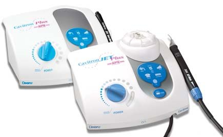
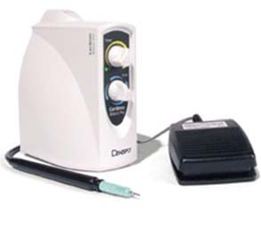
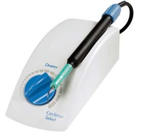
Кавітрон Джет Плюс/Cavitron Jet Plus 30К · Кавітрон Бобкет/Cavitron Bobcat 25 кГц · Кавітрон Селект ЕсПіЕс/Cavitron Select SPS 30K.
Кавітрон Бобкет/Cavitron Bobcat 25 кГц, Кавітрон Селект ЕсПіЕс/Cavitron Select SPS 30 кГц, Кавітрон Профі Джет/Сavitron Prophy Jet, а також Кавітрон Джет Плюс/Cavitron Jet Plus 30 кГц (виробництва Дентсплай/Dentsply) — комбінована система, яка складається з магнітострикційного скейлера 30 кГц і апарата для повітряно-абразивного полірування. Магнітострикційний принцип дії цих приладів забезпечує дбайливу роботу, що не пошкоджує реставраційні конструкції, а також щадний вплив при контакті з м'якими тканинами зуба, що робить процедуру професійної гігієни безболісною і комфортною для пацієнта.
Додаткові ефекти ультразвукового скейлінгу
Ефективність зняття зубних відкладень з поверхні зуба забезпечується за рахунок комбінації чотирьох механізмів: механічної обробки, іригації, кавітації та акустичної турбуленції. У зонах, недоступних для механічного впливу кінчика, іригація, кавітація та акустична турбулентність дозволяють негативно діяти на мікроорганізми біоплівки, усунути бактеріальні ендотоксини, підвищити вплив антибактеріальних агентів.
Механізм кавітації розвивається за рахунок коливальних рухів кінчика інструмента і потоку води. Крихітні бульбашки повітря, пари, кисню руйнують мембрану бактеріальних клітин і забезпечують антимікробний ефект. Кавітаційні бульбашки пульсують, зливаються, утворюють потужні гідродинамічні потоки, мікропотоки і сприяють руйнуванню мікробної біоплівки, незначному руйнуванню твердих зубних відкладень, їхньому ерозуванню.
Акустична турбуленція являє собою гідродинамічну хвилю в рідині, що виникає навколо коливного кінчика ультразвукової насадки, що також призводить до руйнування біоплівки. Іригація слугує охолоджувальним агентом під час ультразвукової обробки, вимиває уламки зубного каменю та інші сторонні тіла з пародонтальної кишені. В апаратах для ультразвукового скейлінгу передбачена іригація зони втручання не лише дистильованою водою, а й антисептичним розчином (розчини хлоргексидину різної концентрації). Вібрація інструмента у водному середовищі пародонтальної кишені створює ефект кавітації, який покращує обробку поверхні зуба і має антибактеріальні властивості. Регулюється подача дистильованої води або антисептичного розчину на наконечник. Високу швидкість подачі води на наконечник застосовують при роботі в глибоких кишенях, у важкодоступних зонах з рясним відкладенням зубного каменю. Крапельне зрошення застосовують при знятті зубних відкладень у хворих з виразково-некротичним гінгівітом.
Ці додаткові ефекти ультразвуку дозволяють видаляти зубні відкладення не лише в зоні контакту зуба з наконечником, а й на невеликій відстані від нього.
Клінічна ефективність ультразвукового скейлінгу в пародонтології
Ефективність професійної механічної обробки порожнини рота в превенції захворювань пародонта була проаналізована в систематичному огляді Нідлмен/Needleman (2005), у якому були використані результати рандомізованих контрольованих досліджень, контрольованих клінічних досліджень та когортних досліджень, опублікованих з 1950 року по жовтень 2004 року. За результатами 2179 публікацій автори дійшли висновку про ефективність механічного усунення біоплівки в поєднанні з інструкцією з індивідуального гігієнічного режиму догляду за порожниною рота в поліпшенні показників стану здоров'я порожнини рота. Достовірно зменшуються показники гігієнічних індексів, показники запалення тканин пародонта та індекс кровоточивості, що позитивно впливає на клінічні показники глибини пародонтальної кишені, клінічного прикріплення ясен і суттєво знижує частоту загострень захворювань пародонта.
Зменшення глибини пародонтальної кишені через 3 місяці після ультразвукового зняття зубних відкладень у хворих на генералізований пародонтит становило в середньому 1,18 мм (Ван дер Вейден і Тіммерман/Van der Weijden & Timmerman, 2002), 1,8 мм (Кохер/Kocher, 2005), 1,95±1,40 мм (Брохут/Brochut, 2005).
Ультразвуковий скейлінг, інструментальна обробка поверхні зубів достовірно зменшують мікробну обсіменіність пародонтальних кишень у хворих на генералізований пародонтит. За даними дослідження Ремрев/Rhemrev (2005), відзначено достовірне зменшення мікробної обсіменіності анаеробними мікроорганізмами пародонтальних кишень після інструментальної обробки поверхні коренів зубів, що становило (CFUs/мл ± SD) — 0,09±10⁶ — порівняно з вихідним станом 3,9±10⁶. Механічна обробка поверхні зубів сприяла видозміні мікробного пейзажу пародонтальних кишень: достовірно зменшується кількість Tannerella forsythia, Micromonas micros, Fusobacterium nucleatum і спірохет. Знижується ступінь обсіменіння такими пародонтопатогенами, як Porphyromonas gingivalis: 0,01±0,03 (CFUs/мл, 10⁶±SD) — порівняно з вихідним 1,01±1,55 (CFUs/мл, 10⁶±SD). Зменшення мікробної обсіменіності, руйнування біоплівки, усунення твердих зубних відкладень на поверхні зуба поліпшують клінічні параметри загоєння тканин пародонта.
Особливості роботи з ультразвуковим скейлером
Для досягнення максимальної ефективності при роботі ультразвуковими апаратами, зменшення ятрогенних пошкоджень цементу і дентину кореня зуба слід дотримуватися певних параметрів. До них належать:
- потужність ультразвукових коливань, що регулюється апаратом;
- латеральна сила, що прикладається на насадку;
- кут між насадкою і віссю зуба.
Потужність
Клінічна ефективність і якість очищення поверхні зуба і кореня від зубного каменю напряму залежать від вібраційних характеристик. Чим більше енергії подається на наконечник, тим більша амплітуда коливань, що дає жорсткіший удар по поверхні, яку очищають. У різних клінічних ситуаціях використовують різну потужність апарата:
- для іригації та зняття м'якого зубного нальоту застосовують малу потужність апарата (від 1 до 3);
- для зняття незначних над- і піддесенних відкладень застосовують середню потужність апарата (від 3 до 6);
- для зняття великих масивів зубних відкладень і середніх розмірів потрібна висока потужність (6-10).
При роботі в глибоких пародонтальних кишенях застосовують високу потужність апарата.
Практичні рекомендації
- Висока енергія рекомендується при первинному пародонтологічному лікуванні.
- Низька частота — видалення мікробного нальоту при проведенні професійної гігієни порожнини рота і підтримувального пародонтологічного лікування.
Латеральна сила
При роботі ультразвуковими скейлерами рухи лікаря мають бути легкими, без тиску. Надлишок тиску зменшує амплітуду коливань робочої частини насадки і, отже, ефективність проведених маніпуляцій. Також вид сили тиску, що прикладається на інструмент, часто є однією з причин пошкоджень поверхні зуба або реставраційної конструкції з утворенням значних дефектів. Один робочий рух інструмента знімає 1,0 мкм субстанції твердих тканин зуба. Залежно від типу насадки і прикладеної сили знімається різна кількість тканин кореня зуба. Зі збільшенням натиску на наконечник зменшується ефективність інструмента, оскільки зменшується вібрація кінчика насадки. Визначенню сили, прикладеної на наконечник, присвячено багато наукових досліджень. Згідно з даними літератури, рекомендована латеральна сила, прикладена на наконечник, має становити 0,25-1 Н.
Кут між насадкою і віссю зуба
Недотримання кута між насадкою ультразвукового скейлера і оброблюваною поверхнею зуба може призвести до ятрогенного пошкодження як дентину, так і цементу кореня зуба. Збільшення кута між віссю зуба і насадкою збільшує травмувальну (дряпаючу) дію на тканини зуба. Оптимальний кут між віссю зуба і УЗ-насадкою має становити від 1 до 10°.
| Потужність | середня |
|---|---|
| Латеральна сила | до 1 Н |
| Кут між інструментом і віссю зуба | 1-10° |
Насадки магнітострикційних скейлерів Кавітрон/Cavitron, Дентсплай/Dentsply
Апарати для ультразвукового скейлінгу мають у наборі насадки різної форми.
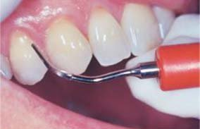
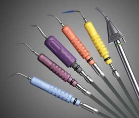
Насадки магнітострикційних скейлерів Кавітрон.
| За типом подачі води | За клінічним застосуванням |
|---|---|
| з фокусованим спреєм | для зняття наддесенних зубних відкладень |
| з внутрішньою подачею спрею | для зняття піддесенних зубних відкладень; для роботи на поверхні імпланта |
У магнітострикційних скейлерів Кавітрон/Cavitron — надлегкий автоклавований наконечник, заміна насадок проводиться за 5 секунд. Широкий спектр насадок різних форм дозволяє забезпечити індивідуальний підхід у кожному клінічному випадку.
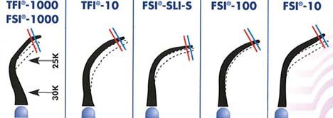
Насадки для професійної гігієни порожнини рота, зняття наддесенних зубних відкладень:
FSI 1000/Bellissima FSI – 1000
FSI 100/Bellissima FSI – 100
FSI – SLI – 10 Straight/Bellissima FSI – 10 Straight
Насадки для проведення первинного пародонтологічного лікування, зняття піддесенних зубних відкладень, обробки поверхні коренів зубів:
FSI – SLI – 10 Straight/Bellissima FSI – 10 Straight (пряма)
FSI – SLI – 10 Right/Bellissima FSI – 10 Right (права)
FSI – SLI – 10 Left/Bellissima FSI – 10 Left (ліва)
Усі поверхні пародонтологічних насадок є робочими, за винятком кінчика, що дозволяє ефективніше за короткий проміжок часу провести зняття зубних відкладень і згладжування поверхні кореня. Форма насадок ідеально адаптована до морфології кореня зуба.
Порівняльні дослідження показали приблизно еквівалентний рівень видалення зубних відкладень ручним, звуковим та ультразвуковим способами. Більша ефективність досягається при використанні сучасних ультразвукових насадок, що мають маленький діаметр кінчика (практично такий, як діаметр зонда), що дозволяє працювати ними у вузьких кишенях і важкодоступних ділянках, таких як фуркація. Ефективність роботи залежить від зношування, стирання насадки. Зношування кінчика ультразвукової насадки зменшує амплітуду коливань, унаслідок чого знижується ефективність роботи інструмента.
Контрольна карта зношування насадок Кавітрон
При експлуатації ультразвукових апаратів слід періодично перевіряти ступінь зношування насадки. При досягненні блакитної лінії насадку рекомендується замінити, але можна ще використовувати з 25% втратою потужності (приблизно через 6-9 місяців використання). При досягненні червоної лінії насадку використовувати не слід (50% втрата потужності).
Вплив ультразвукового скейлінгу на тверді тканини зуба
При механічній обробці поверхні коренів зубів знімається також цемент кореня зуба. Травмувальна дія ультразвукової насадки посилюється при збільшенні латеральної сили, прикладеної на наконечник; збільшенні кута між інструментом і віссю зуба; при припиненні подачі води на кінчик інструмента.
Основною умовою запобігання ятрогенним пошкодженням і досягнення якісної інструментальної обробки поверхні коренів зубів є правильна техніка ультразвукового скейлінгу.
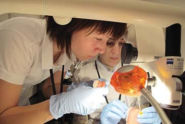
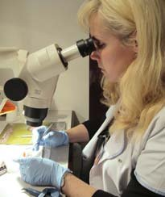
Порівняльна оцінка впливу ультразвукових коливань на тверді тканини зуба проводиться методами скануючої електронної мікроскопії та стереомікроскопії.
За даними досліджень різних авторів, при дотриманні основних параметрів роботи з ультразвуковим скейлером після інструментальної обробки знімається від 50 до 100 мкм твердих тканин зуба. Порівняльний аналіз інструментальної обробки, проведеної ручними інструментами й ультразвуковими (Вастардіс/Vastardis), не виявив достовірної різниці в показниках, що характеризують ступінь впливу на тверді тканини зуба. За результатами електронної мікроскопії, після механічної обробки (10 рухів) при роботі ручними кюретами Грейсі знімається твердих тканин зубів 15 мкм, 10,7 мкм — при роботі ультразвуковим апаратом. Найбільш травмувальну дію чинять насадки з алмазним напиленням, які знімають 46,2 мкм тканин зуба після 10 рухів.
Механічна обробка поверхні зубів при пародонтологічному лікуванні передбачає проведення детоксикації поверхні кореня зуба.
Детоксикація цементу кореня зуба:
- зняття мікробного нальоту, цементу, поверхневого дентину, контамінованих токсинами м/о;
- висічення (30-80 мкм), згладжування резорбційних лакун, резервуарів повторної інфекції — реінфікування пародонтальної кишені;
- створення поверхні кореня зуба, біологічно прийнятної для реприкріплення і нового прикріплення тканин пародонта.
Також слід пам'ятати про анатомічні особливості цементу кореня зуба: у пришийковій ділянці переважає безклітинний цемент, здатність до регенерації якого різко знижена. Другий аспект: під впливом мікробної біоплівки, твердих зубних відкладень змінюється цемент кореня зуба. Пенетрація, абсорбція ендотоксинів цементом кореня зуба зумовлює його гіпермінералізацію та дегенерацію колагенового матриксу (Фуказава/Fukazawa і Ніші Нішимура/Nishi Nishimurak, 1994). Усі ці фактори ускладнюють процес загоєння тканин пародонта.
Низка досліджень присвячена порівняльній оцінці впливу ультразвукових коливань при роботі різними типами апаратів — магнітострикційними і п'єзоелектричними (Базан С.В., 2011). За результатами даних скануючої електронної мікроскопії, п'єзоелектричний скейлер спричиняє глибші, численніші кратероподібні руйнування твердих тканин на поверхні зубів порівняно з магнітострикційним скейлером Кавітрон.
При захворюваннях тканин пародонта найпоширеніша цервікальна гіперестезія, яка, за даними різних авторів, у хворих на генералізований пародонтит трапляється від 36 до 64,4-92,8%. За рахунок підігріву води в наконечнику магнітострикційних апаратів у таких пацієнтів знижуються больові відчуття.
Вплив ультразвуку на м'які тканини пародонта
Зміни поверхні цементу кореня зуба у хворих із захворюваннями пародонта, контамінація цементу мікроорганізмами та ендотоксинами погіршують прикріплення тканин пародонта. Хосраві/Khosravi (2004) вивчав вплив поверхні кореня зуба, контамінованої мікроорганізмами, на культуру і ріст фібробластів ясен. За даними електронної мікроскопії та стереомікроскопії, достовірно менша кількість фібробластів прикріплюється до поверхні інструментально не обробленого зуба у пародонтологічних хворих, що становило 4875±2655 людських фібробластів ясен, прикріплених на 1 см² поверхні кореня зуба. На думку дослідників, цитотоксичний вплив інструментально не обробленої поверхні кореня зуба негативно впливає на ріст культури клітин і прикріплення фібробластів. Достовірно збільшується кількість фібробластів ясен на поверхні коренів зубів після ультразвукової обробки (кількість прикріплених ясенних фібробластів на 1 см² поверхні кореня становила 27189±14507) і ручними інструментами (25859±11278 фібробластів). Деконтамінація поверхні коренів зубів при інструментальній обробці, ультразвуковий скейлінг у хворих на генералізований пародонтит забезпечують біологічно прийнятну поверхню кореня зуба для повторного прикріплення ясен. Клінічна ефективність механічної обробки поверхні коренів зубів підтверджується зменшенням глибини пародонтальної кишені та збільшенням клінічного прикріплення ясен, стабілізацією захворювання.
Показання до ультразвукового скейлінгу:
- професійна гігієна порожнини рота;
- первинне пародонтологічне лікування — інструментальна обробка поверхні коренів зубів;
- підтримувальне пародонтологічне лікування;
- перед проведенням хірургічних методів лікування захворювань пародонта;
- для деконтамінації поверхні імплантатів із застосуванням спеціальних пластикових насадок.
Протипоказання до використання електромеханічних скейлерів:
- системні захворювання пацієнта — імплантований кардіостимулятор неекранованого типу; проведення у пацієнта імунодепресивної або кортикостероїдної терапії; стан після хірургічного лікування захворювань сітківки, при глаукомі; злоякісні новоутворення; цукровий діабет у стадії декомпенсації; гостре і хронічне порушення дихання; наявність в анамнезі захворювань, що передаються повітряно-крапельним (туберкульоз, герпетична інфекція) і гематогенним шляхом (вірусний гепатит, ВІЛ), венеричних захворювань (сифіліс тощо); епілепсія;
- захворювання слизової оболонки порожнини рота — афтозний стоматит, ерозії, виразки;
- порушення мінералізації твердих тканин зубів — у періоди молочного і змінного прикусу; гіпомінералізація емалі зубів.
Заходи безпеки при роботі з ультразвуковими апаратами
При роботі ультразвуковими скейлерами утворюється аерозоль, що складається з повітря, води, ротової рідини пацієнта і мікроорганізмів пародонтальної кишені. Утворена хмаринка аерозолю, контамінованого мікроорганізмами, може інфікувати медичний персонал, стоматологічний кабінет, а також самого пацієнта або посилити перебіг системного захворювання. Слід зазначити, що в апаратів Кавітрон фокусна подача водяного спрею, тому аерозоль утворюється мінімально.
При ультразвуковому знятті зубних відкладень необхідно дотримуватися таких вимог:
- перед проведенням процедури пацієнт робить ротові ванночки з 0,05% розчином хлоргексидину;
- персонал працює в масках, рукавичках, одноразових нагрудних фартухах, захисних окулярах;
- застосовуються слиновідсмоктувач, пилосос;
- увімкнена витяжка;
- на робочому столі лікаря присутні предмети, інструменти лише для роботи з цим пацієнтом;
- кварцування кабінету.
Ультразвуковий скейлінг проводять після попередньої ротової ванночки з розчинами антисептиків (розчином хлоргексидину) з метою зниження рівня обсіменіння мікроорганізмами порожнини рота, пародонтальних кишень. У пацієнтів з тяжким перебігом генералізованого пародонтиту в стадії загострення ультразвуковий скейлінг бажано проводити на тлі системної антибактеріальної терапії. З обережністю слід проводити лікування пацієнтів з патологією дихальної системи, з наявністю контактних лінз. Не рекомендується проводити ультразвуковий скейлінг у хворих на інфекційні та респіраторні захворювання.
Клінічний випадок
Пацієнтка В., 43 роки, діагноз: генералізований пародонтит II-III ступеня, загострений перебіг.
Проведено пародонтологічне лікування:
- Професійна гігієна порожнини рота: ультразвуковий скейлінг апаратом Кавітрон — зняття м'яких і твердих наддесенних зубних відкладень.
- Первинне пародонтологічне лікування:
- системна антибіотикотерапія — Клацид (кларитроміцин) по 250 мг 2 рази на добу, тривалість курсу — 5 днів;
- призначення протизапальної терапії: Німесил (німесулід) по 100 мг 2 рази на добу, тривалість курсу — 10 днів;
- ультразвуковий скейлінг Кавітрон — зняття піддесенних зубних відкладень, полірування поверхні кореня кюретами Грейсі, кюретаж пародонтальних кишень;
- місцева антибактеріальна терапія Метрогіл Дента, місцева протизапальна терапія — полоскання Тантум Верде.
- Корекція індивідуальної гігієни порожнини рота з використанням електричної зубної щітки, інтердентальних зубних щіток, іригатора, застосування ополіскувача Лістерин.
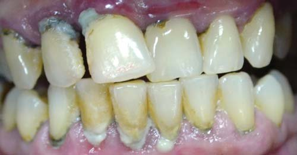
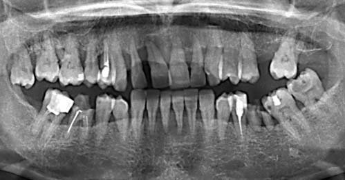
Клінічний стан порожнини рота до лікування. Ортопантомограма.
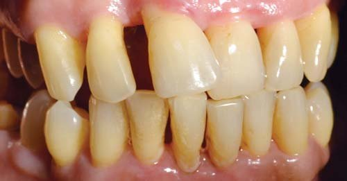
Клінічний стан порожнини рота після первинного пародонтологічного лікування.
Висновок
Таким чином, видалення немінералізованих і мінералізованих зубних відкладень за допомогою ультразвукового скейлера є важливою частиною профілактики та етіотропної терапії запальних захворювань тканин пародонта. Інструментальна обробка поверхні зубів ультразвуковими скейлерами дозволяє прибрати основний масив зубних відкладень, зруйнувати мікробну біоплівку, достовірно знизити обсіменіння мікроорганізмами пародонтальних кишень і створити біологічно прийнятну поверхню кореня зуба для нового прикріплення тканин пародонта. Клінічна ефективність ультразвукового скейлінгу підтверджена численними дослідженнями і полягає у зменшенні глибини пародонтальних кишень, збільшенні клінічного прикріплення ясен і стабілізації рівня патологічних процесів у тканинах пародонта.
Література
- Данилевський М.Ф., Борисенко А.В. та ін. Терапевтична стоматологія. Том 3. Захворювання пародонта. К.: Медицина, 2008. — 616 с.
- Базан С.В. Сравнительная оценка воздействия ультразвуковых колебаний на реставрационные конструкции при проведении профессиональной гигиены полости рта (экспериментально-клиническое исследование). Москва, 2011. — 91 с.
- Вольф Г.Ф. Пародонтология / Г.Ф. Вольф, Э.М. Ратейцхак, К. Ратейцхак; пер. с нем.; под ред. Г.М. Барера. — М.: МЕДпресс-информ, 2008. — 548 с.
- Allais G. // Новое в стоматологии. — 2006. — №4 (136). — С. 4–14.
- Fukazawa E. & Nishimurak K. Superficial cemental curettage: its efficacy in promoting improved cellular attachment on human root surfaces previously damaged with peridontitis // Journal of Periodontology 65, 168-176.
- Flemmig T. F., Petersilka G. J., Mehl A., Hickel R. & Klaiber B (1998 a). Working parameters of a magnetostrictive ultrasonic scaler influencing root substance removal in vitro // Journal of Periodontology 69, 547-553.
- Jepsen S1, Ayna M, Hedderich J, Eberhard J. J Clin Periodontol. — 2004 Nov; 31(11):1003-6.
- Jepsen S, Ayna M, Hedderich J, Eberhard J. Significant influence of scaler tip design on root substance loss resulting from ultrasonic scaling: a laser-profilometric in vitro study // J Clin Periodontol 2004; 31: 1003-1006.
- Kocher T, Fanghanel J, Schwahn C, Ruhling A. A new ultrasonic device in maintenance therapy: perception of pain and clinical efficacy // J Clin Periodontol 2005; 32: 425-429.
- Khosravi M, Bahrami ZS, Atabaki MSJ, Shokrgozar MA, Shokri F. Comparative effectiveness of hand and ultrasonic instrumentations in root surface planing in vitro // J Clin Periodontol 2004; 31: 160-165.
- Lea SC, Landini G, Walmsley AD. Displacements amplitude of ultrasonic scaler inserts // J Clin Periodontol 2003; 30: 505-510.
- Lea SC, Landini G, Walmsley AD // J Clin Periodontol. 2006 Jan; 33(1): 37-41.
- Needleman I, Suvan J, Moles DR, Pimlott J. A systematic review of professional mechanical plaque removal for prevention of periodontal diseases // J Clin Periodontol 2005; 32 (Suppl. 6): 229–282.
- Rhemrev GE, Timmerman MF, Veldkamp I, Van Winkelhoff AJ, Van der Velden U. Immediate effect of instrumentation on the subgingival microflora in deep inflamed pockets under strict plaque control // J Clin Periodontol 2006; 33: 42-48.
- Lea S. C., Landini G. and Walmsley A. D. // J Clin Periodontol 2003; 30: 876-881.
- STEPHEN K. HARREL and JOHN MOLINARI. Aerosols and splatter in dentistry: A brief review of the literature and infection control implications // J Am Dent Assoc 2004; 135; 429-437.
- Vastardis S, Yukna RA, Rice DA, Mercante D. Root surface removal and resultant surface texture with diamond-coated ultrasonic inserts: an in vitro and SEM study // J Clin Peridontol 2005; 32: 467–473.